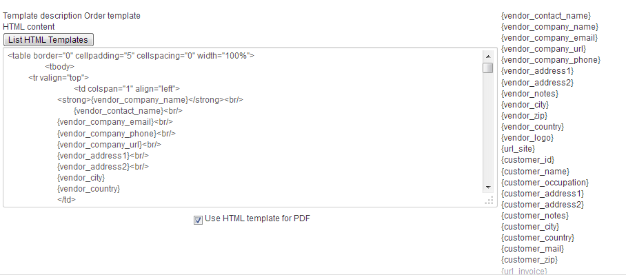
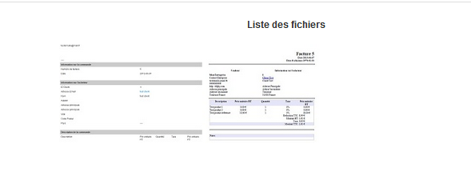

Here you can see templates for order, invoice and quote and if the PDF version is different than the HTML one.
Here you can see the list of tags usable at the right (Check I want to change how the emails are displayed ) to know more about them. And then the template used, here both for HTML and PDF version, you can choose to use different template for PDF by unchecking the "Use HTML template for PDF" checkbox.
You can chose templates by clicking on the corresponding button "List template" for HTML and/or PDF. Then choose the template you want by clicking on the thumbnail and save your new template configuration.